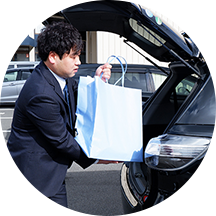

- 営業
- 川村 周平
- 2015年入社松本支店
新卒で入社し5年目、27歳独身。松本市出身。学生時代は野球とバンド活動をしていました。入社後も会社の野球部や友人と活動を続けています。最近釣りをはじめました。
-
出勤
自宅から社用車で支店に出勤します。前日までに使用した分の補充品や、その日に使う材料を準備し車に積み込みます。病院は夜間も動いているため、緊急の症例で使用した物品があったり、急遽その日に行う事になった症例の連絡が来て急いで準備する事もあります。

-
納品や売上処理、予定の確認
病院から発注された物品を納品します。また、病院事務に納品書等を持って行き売上処理を行います。私は複数の担当病院があるため、このタイミングでその日に症例が無い病院の明日以降の予定を確認します。
-
お昼休憩、移動、症例準備
午後の症例に向け病院を移動し、症例の準備をします。この時に少し早いお昼休憩をとります。病院周辺のお店は、病院スタッフの方が詳しいので、いいお店を教えてもらったりして、コミュニケーションを取っています。
-
症例スタート
直前に先生と最終打ち合わせをして、症例が始まります。材料は出来る限り用意していますが、それでも想定外の事が起こる場合もあり、同僚と協力しながら対応します。
-
事務局訪問
事務局にて担当の方と打ち合わせをします。先生から希望があったり、こちらか提案した商品の購入について相談したり、価格の交渉を行います。病院では実際に物を使用する人(先生)とお金を管理する人(事務局)が別なので、その仲介をする事も代理店の仕事の一つです。
-
症例終了
症例の振り返りや今後の症例について先生と話します。このタイミングで新しい製品の紹介や提案を行います。ここでは先生と医療機器メーカーの仲介をして、一緒に話をします。先生のニーズを聞けたり、メーカーから製品の情報を聞いたりと、大事な時間です。
-
帰社・片付け
支店に戻り、伝票の処理や材料の片付けを行います。材料は患者さんに合わせて使うものである為、用意しても使わない物も多くあります。それを返却したり、次回に向け手配をします。また、新しい製品の見積もり作成や事務局の方と話す際の資料を作成をします。
-
帰宅
早く帰る日には、同僚や友人とお酒を飲んだりしています。翌日にお酒は残ってもストレスは残さないようにしています。